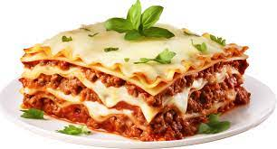

Lasagna

In under an hour you can have similarly delicious lasagna ready in your home. Follow the steps below and enjoy the ride:
Ingredients
- 100g Flour
- 200g Meat
- 2 Eggs
- 75g Carrots
Steps
- Peal the carrots
- Put together eggs, flour and meat
- Bake for 45 min at 200 degrees celsius
Front page